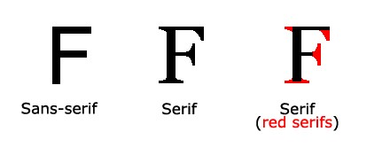

Elegir la fuente correcta tiene un gran impacto en cómo los lectores experimentan un sitio web. La fuente correcta puede crear una fuerte identidad para su marca. Es importante usar una fuente que sea fácil de leer. La fuente agrega valor a su texto. También es importante elegir el color y el tamaño de texto correctos para la fuente.
En CSS hay cinco familias de fuentes genéricas:
Todos los diferentes nombres de fuentes pertenecen a una de las familias de fuentes genéricas.
| Familia de fuente genérica | Ejemplos de nombres de fuentes |
|---|---|
| Serif | Times New Roman Georgia Garamond |
| Sans-serif | Arial Verdana Helvetica |
| Monospace | Courier New Lucida Console Monaco |
| Cursive | Brush Script MT Lucida Handwriting |
| Fantasy | Copperplate Papyrus |
En CSS usamos la propiedad font-family para especificar la fuente de un texto. Debe contener varios nombres de fuentes como un sistema "alternativo" para garantizar la máxima compatibilidad entre navegadores y sistemas operativos. Comience con la fuente que desee y termine con una fuente genérica. Los nombres de las fuentes deben estar separados por comas.
.p1 {
font-family: "Times New Roman", Times, serif;
}
.p2 {
font-family: Arial, Helvetica, sans-serif;
}
.p3 {
font-family: "Lucida Console", "Courier New", monospace;
}
Este párrafo usa la fuente Times New Roman.
Este párrafo usa la fuente Arial.
Este párrafo usa la fuente Lucida Console.